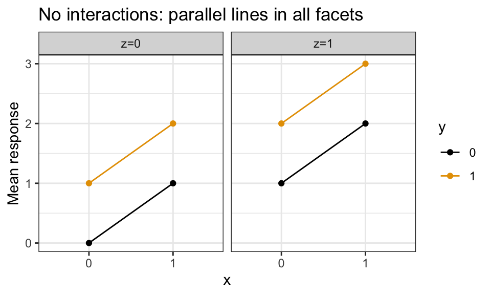
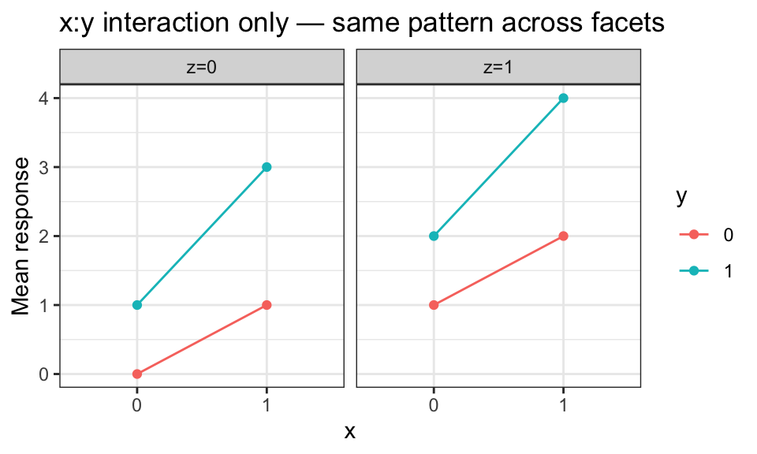
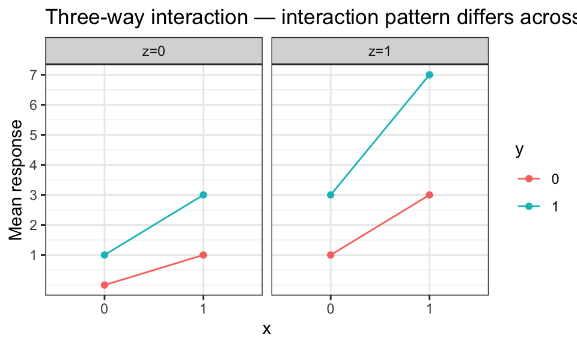
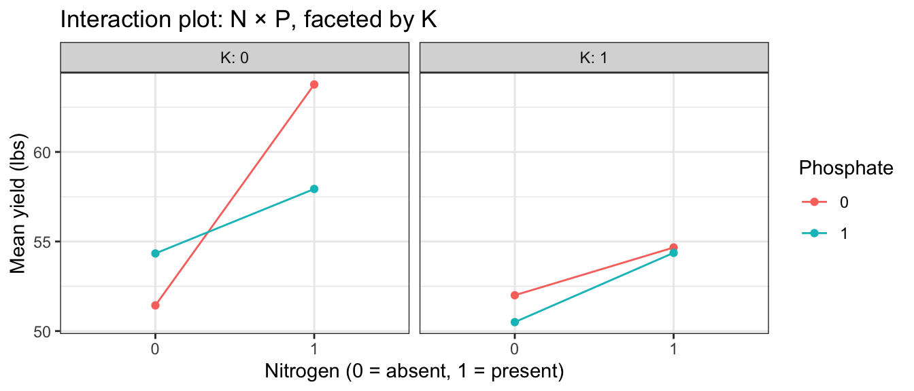

Multi-Factor ANOVA
Learning Objectives
- Write out the general multi-factor ANOVA model with main effects and interactions.
- Distinguish two-way interactions from three-way interactions using interaction plots.
- Fit a multi-factor ANOVA model in R and test for interactions top-down.
- Chapter 13 of the textbook.
The General Model
With three categorical variables (\(A\), \(B\), \(C\)):
\[Y_{ijk\ell} = \mu + \alpha_i + \beta_j + \gamma_k + (\alpha\beta)_{ij} + (\alpha\gamma)_{ik} + (\beta\gamma)_{jk} + (\alpha\beta\gamma)_{ijk} + \epsilon_{ijk\ell}\]
| Term | Meaning |
|---|---|
| \(\mu\) | baseline mean |
| \(\alpha_i, \beta_j, \gamma_k\) | main effects |
| \((\alpha\beta)_{ij}, (\alpha\gamma)_{ik}, (\beta\gamma)_{jk}\) | two-way interactions |
| \((\alpha\beta\gamma)_{ijk}\) | three-way interaction |
- A two-way interaction means the effect of one variable depends on the level of another.
- A three-way interaction means the two-way interaction between \(A\) and \(B\) itself changes depending on the level of \(C\).
Interaction Plots for Three Factors
With three factors, interaction plots use:
- x-axis: one variable.
- Color/line: a second variable.
- Facets: the third variable.
The key question for each arrangement: do the lines look parallel within each facet, and do the patterns look the same across facets?
No Interactions
Parallel lines, same pattern in every facet:
Two-Way Interaction Between \(x\) and \(y\) Only
Non-parallel lines within each facet, but the same non-parallel pattern in every facet:

- The interaction between \(x\) and \(y\) is the same regardless of the level of \(z\).
- No three-way interaction.
Three-Way Interaction
Non-parallel lines, and the interaction pattern changes across facets:

- The relationship between \(x\) and \(y\) is different at different levels of \(z\).
- This is a three-way interaction.
Case Study: Pea Yield
- Data:
npk(built into R), from a split-plot agricultural experiment. - Three binary fertilizers applied to peas: N (nitrogen), P (phosphate), K (potassium).
- Response:
yieldin pounds per plot. - Question: Do N, P, K, and their interactions affect pea yield?
data(npk)
glimpse(npk)Rows: 24
Columns: 5
$ block <fct> 1, 1, 1, 1, 2, 2, 2, 2, 3, 3, 3, 3, 4, 4, 4, 4, 5, 5, 5, 5, 6, 6…
$ N <fct> 0, 1, 0, 1, 1, 1, 0, 0, 0, 1, 1, 0, 1, 1, 0, 0, 1, 0, 1, 0, 1, 1…
$ P <fct> 1, 1, 0, 0, 0, 1, 0, 1, 1, 1, 0, 0, 0, 1, 0, 1, 1, 0, 0, 1, 0, 1…
$ K <fct> 1, 0, 0, 1, 0, 1, 1, 0, 0, 1, 0, 1, 0, 1, 1, 0, 0, 0, 1, 1, 1, 0…
$ yield <dbl> 49.5, 62.8, 46.8, 57.0, 59.8, 58.5, 55.5, 56.0, 62.8, 55.8, 69.5…table(npk$N, npk$P, npk$K), , = 0
0 1
0 3 3
1 3 3
, , = 1
0 1
0 3 3
1 3 3- Balanced design: 3 observations per combination.
Interaction Plots
ggplot(npk, aes(x = N, y = yield, color = P, group = P)) +
stat_summary(fun = mean, geom = "line") +
stat_summary(fun = mean, geom = "point") +
facet_wrap(~K, labeller = label_both) +
labs(x = "Nitrogen (0 = absent, 1 = present)",
y = "Mean yield (lbs)",
color = "Phosphate",
title = "Interaction plot: N × P, faceted by K")
- Lines are roughly parallel within facets — no obvious N×P interaction.
- Yields are slightly higher when N is present (lines shifted up at N=1).
- K does not appear to change the N×P pattern much — no strong three-way interaction.
Top-Down Testing Strategy
- Start with the full interaction model (all main effects + all interactions).
- Test the three-way interaction first. If not significant, drop it.
- Then test two-way interactions. If none significant, use the additive model.
- Then test main effects.
aout_full <- aov(yield ~ N * P * K, data = npk)
tidy(aout_full)# A tibble: 8 × 6
term df sumsq meansq statistic p.value
<chr> <dbl> <dbl> <dbl> <dbl> <dbl>
1 N 1 189. 189. 6.16 0.0245
2 P 1 8.40 8.40 0.273 0.608
3 K 1 95.2 95.2 3.10 0.0975
4 N:P 1 21.3 21.3 0.693 0.418
5 N:K 1 33.1 33.1 1.08 0.314
6 P:K 1 0.482 0.482 0.0157 0.902
7 N:P:K 1 37.0 37.0 1.20 0.289
8 Residuals 16 492. 30.7 NA NA - The three-way interaction
N:P:Khas \(p = 0.54\) — no evidence. - Drop it and refit with only two-way interactions.
aout_2way <- aov(yield ~ N + P + K + N:P + N:K + P:K, data = npk)
tidy(aout_2way)# A tibble: 7 × 6
term df sumsq meansq statistic p.value
<chr> <dbl> <dbl> <dbl> <dbl> <dbl>
1 N 1 189. 189. 6.09 0.0245
2 P 1 8.40 8.40 0.270 0.610
3 K 1 95.2 95.2 3.06 0.0982
4 N:P 1 21.3 21.3 0.684 0.420
5 N:K 1 33.1 33.1 1.07 0.316
6 P:K 1 0.482 0.482 0.0155 0.902
7 Residuals 17 529. 31.1 NA NA - None of the two-way interactions are significant (\(p > 0.05\)).
- Adopt the additive model.
aout_add <- aov(yield ~ N + P + K, data = npk)
tidy(aout_add)# A tibble: 4 × 6
term df sumsq meansq statistic p.value
<chr> <dbl> <dbl> <dbl> <dbl> <dbl>
1 N 1 189. 189. 6.49 0.0192
2 P 1 8.40 8.40 0.288 0.597
3 K 1 95.2 95.2 3.26 0.0859
4 Residuals 20 583. 29.2 NA NA - Nitrogen (\(p = 0.004\)): strong evidence that nitrogen increases yield.
- Phosphate (\(p = 0.057\)): marginal evidence.
- Potassium (\(p = 0.028\)): moderate evidence that potassium decreases yield.
Coefficient Estimates
lm_add <- lm(yield ~ N + P + K, data = npk)
tidy(lm_add, conf.int = TRUE) |>
select(term, estimate, conf.low, conf.high, p.value)# A tibble: 4 × 5
term estimate conf.low conf.high p.value
<chr> <dbl> <dbl> <dbl> <dbl>
1 (Intercept) 54.6 50.1 59.2 1.74e-16
2 N1 5.62 1.02 10.2 1.92e- 2
3 P1 -1.18 -5.78 3.42 5.97e- 1
4 K1 -3.98 -8.58 0.616 8.59e- 2- Adding nitrogen is estimated to increase yield by about 5.6 lbs per plot (95% CI: 2.0 to 9.3 lbs).
- Adding potassium is estimated to decrease yield by about 3.9 lbs per plot (95% CI: −7.6 to −0.3 lbs).
R Formula Quick Reference
| Formula | Interpretation |
|---|---|
A + B + C |
main effects only (additive) |
A * B + C |
A, B, C, and A:B |
A * B * C |
all main effects and all interactions |
(A + B + C)^2 |
all main effects and all two-way interactions |
A:B |
A×B interaction term only (no main effects) |
Exercises
1. Using the npk data:
Create an interaction plot of
yieldvs.N, colored byK, faceted byP. Does the plot suggest any interaction between N and K?Formally test whether the three-way interaction
N:P:Kis significant usingtidy(aov(yield ~ N * P * K, data = npk)). Report \(p\)-value and conclusion.The additive model fitted in this lecture found significant effects of N and K. Interpret both coefficients in plain language. Do the signs of the effects make agricultural sense?
2. Explain in plain language the difference between a two-way and a three-way interaction. Give an example from everyday life (not from this lecture) of:
A plausible two-way interaction.
A plausible three-way interaction.
3. An experiment studies the effects of exercise type (Cardio vs. Strength), diet (Low-carb vs. High-carb), and sleep quality (Poor vs. Good) on weight loss.
Write out the full interaction ANOVA model using the notation from this lecture. Identify which terms are main effects, which are two-way interactions, and which is the three-way interaction.
If you were conducting this study, what testing strategy would you use? Start with what model and what test?
How many parameters does the full interaction model have (including the baseline)? How many parameters does the additive model have?